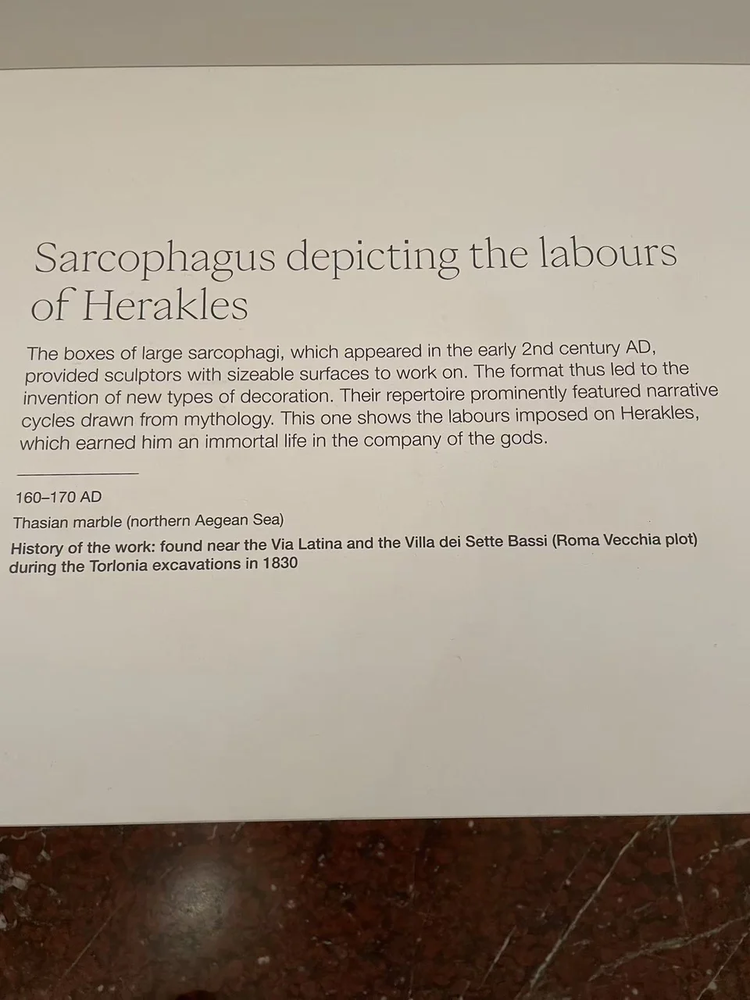

ROMAN SARCOPHAGI / R02
赫拉克勒斯功业石棺
同一个英雄反复出现，一整面石棺便容纳了多次考验。

- 年代
- 160–170年
- 材料
- 塔索斯大理石（现场展牌）；官网概称白色大理石
- 收藏
- Fondazione Torlonia／托洛尼亚收藏
- 观看地点
- 卢浮宫 · 巴黎
- 馆藏号
- MT 422
- 发现地记录
- 拉丁大道Roma Vecchia地块，塞特巴西别墅附近（展牌）
先找动物，再追踪英雄
狮身、缠绕的怪物和被举起的动物，打断了立像似的重复节奏。赫拉克勒斯的身体一时弯曲，一时张开手臂，不同动作把连续的功业排在同一石面上。收藏方辨认出涅墨亚狮子、勒耳那九头蛇等题材，并指出英雄的身影还延续到两侧与棺盖。 [2]
以功业纪念一个人
这些故事给亡者提供的是经受考验、获得荣耀的英雄范型。现场展牌记载，这件塔索斯大理石石棺于1830年在托洛尼亚家族的拉丁大道发掘中发现。今天在卢浮宫相遇的仍是托洛尼亚藏品。 [2] [5]
现场展签 · 1张
